水獭 · 划水加速
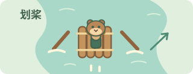
18秒同行，水面自动划桨加速水獭划桨时加速，抬桨时顺流滑行。船腾空或翻倒时不会划水。
左侧头像下的时间条走完，水獭到站下船；踢掉它也会失去加速。
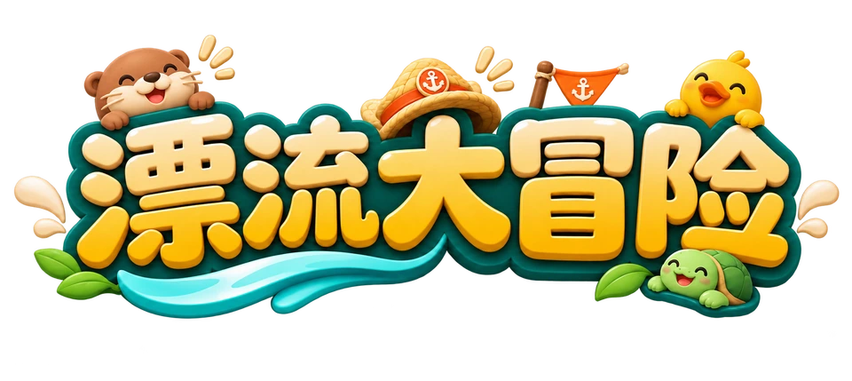
请先完成普通模式的前4关，
即可解锁无尽模式。
坐上缤纷气垫船，快乐开漂。
已暂停 · 换旗结束旧效果
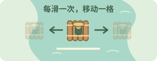
阅读已暂停 · 实操成功后继续
准备好了，就接着浪。
0本局金币
从第四关速度起步，越漂越快。
再出发，挑战更远距离与更多金币！
接上船就会帮忙，不需要另按技能键。

18秒同行，水面自动划桨加速水獭划桨时加速，抬桨时顺流滑行。船腾空或翻倒时不会划水。
左侧头像下的时间条走完，水獭到站下船；踢掉它也会失去加速。
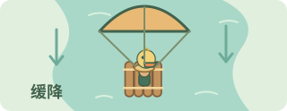
22秒同行，下降时撑伞缓降给你更多空中换道、松手扶正的时间。只在下降时生效。
仍要自己起跳、松手。22秒到站后伞会收起，也不能替你躲撞击。
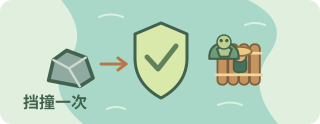
26秒内，替你挡一次礁石或浮木撞击时自动挡下，这次不扣追赶距离、也不翻船；挡完后龟龟会离船。
挡一次或26秒到站就离船，以先发生的为准；挡不住鳄鱼。
阅读时河流与鳄鱼已暂停。
金币、船只、徽章和成绩均保留
点选已解锁的船，立即换上。船只只改变外观。
历史单局最远距离 · 前100名
木筏会自己向前，你来掌舵。左上角显示实际前进速度，单位是米/秒。
左滑去左边，右滑去右边；每滑一次，只切到相邻位置。
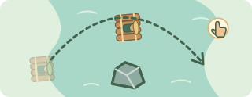
轻点起跳，稳稳落水就完成跳跃练习。平时也可换道绕开障碍。
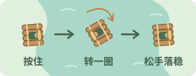
按住起跳并空翻；松手后木筏会扶正，落稳再出发。
连续收满5枚金币，或动作达成3连击，就会自动冲浪，无需额外操作。
空中也能换道。左右按钮或 ← → / A D 每按一次移动一次，按住不会连续换道。空格键轻点跳跃、长按空翻，P / Esc 暂停。
无尽模式：四关全部通关后解锁。以36米/秒起步，每秒再加速0.12米/秒；鳄鱼同步加速。没有终点，翻船或被追上后结算，也可暂停后主动结算。距离、金币从零计算，和普通模式共用双榜。
共4关，船与鳄鱼的基础速度逐关提高。加速不会缩短过关时间。前两关循序练习换道与借浪，第三关熟悉横风和飞石，第四关是高速挑战。翻船后及时扶正。水獭划桨、冲浪、自救、踢搭子和码头牵引都能提速；腾空后划桨推力减弱。是否正在拉开，看鳄鱼距离条；第1至4关领先距离上限分别为20、30、40、50米。过关不补距离，达到上限后不能继续积攒。
靠近就自动上船，能力自动生效。
在水面划桨时帮你加速，也能减轻鳄鱼追近；腾空或翻船时不划桨。
同行18秒下落更慢，多一点换道和扶正的时间；起跳和松手仍由你完成。
同行22秒自动挡下一次礁石或浮木；挡完就离船，挡不住鳄鱼。
26秒内有效 · 挡完即离船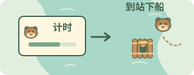
左侧头像下的时间条逐渐变短，归零后能力结束。同种只能留一只。
可点击左侧搭子旁的「踢」，让指定搭子下船：立刻加速6米/秒，持续1秒，代价是失去该搭子的能力。同种再次拾取会刷新同行时间。
同种再次相遇会刷新同行时间。挡撞或踢出的搭子离船后，需从后续投放重新接上。暂停与阅读指南不消耗同行时间。
先跟随当时的方向提示，换到靠岸的位置。
保持靠岸，在水面稳住，鱼篮会自动上船。
鱼篮 + 3金币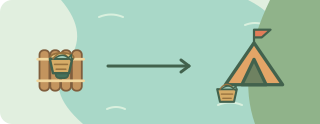
每关都有送鱼点；带着鱼篮靠近右岸营地，就会自动送到。
送到 + 6金币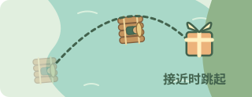
先靠岸，看到接礼提醒时轻点跳跃，把礼物接住。
接住 + 4金币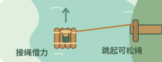
在水面靠近码头自动接绳；想松开时，起跳或换道离岸。
岸边奖励每处只领一次。送鱼前要带好鱼篮，撞击会掉落鱼篮。接绳需要稳住，不用额外按技能键。
先处理眼前的风、障碍和鳄鱼。
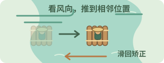
看水面箭头，向反方向滑回；你刚矫正，到时间风仍会再推。
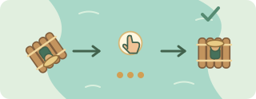
看到扶正提醒就连点三次，或一直按住自救，越快越好。
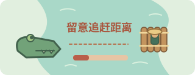
留意变红的追赶条。船上有搭子时，也可以踢一位，换取1秒冲刺。
双道长礁会横跨相邻两条航道，提前换到空出来的那条，或接近时轻点跳过。
岸边飞石会落在航道上。留意水面的淡影，提前换道，或在石头落点前轻点起跳。
风停不会自动回原位；最外侧不会被吹到岸外。腾空或翻船时跳过当次风推，落水后仍按原节奏继续。滑动矫正不会重置风的计时。
鸭鸭只帮助下降缓降；龟龟只能挡一次礁石或浮木，不能挡住鳄鱼。落水前记得松手扶正。
第一关逐步认识动作，后面的关卡再组合使用。

一路学换道、跳跃、搭子、横风与靠岸。完成四关，登岸领取MVP荣誉。
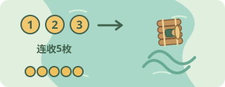
五连金币或动作三连击都会自动触发同一种冲浪。已有同等或更强加速时，保留一次，结束后自动接上。
共4关：基础速度8、12、20、36米/秒，分别漂流30、40、50、60秒。只有实际游玩时间推进关卡；暂停、后台与暂停式教学不计时。第一关学习换道和跳跃，第二关体验借浪与岸边任务，第三关加入横风、摆动原木和岸边飞石，第四关障碍更密并迎接高速终章。小旗与搭子靠近就会自动生效。沿途提示不会暂停游戏，错过也能继续，想细练可打开「重新练习」。
飞跃路线有空中金币，另一侧始终留有水面通道。借浪稳稳落水获得 100 分，计入一次有效动作；水面箭头表示横流方向；风区内每 2 秒把木筏向风向推到相邻一条航道，滑动矫正不会重置计时，到时仍会继续推船。留意风向与倒计时，提前矫正或起跳躲避；风停不会自动回原位。腾空或翻船时跳过当次风推，落水后仍按原节奏继续；最外侧不会再向岸外移动。
每关计时结束时须保持木筏直立，获得250分和5金币。前三关完成后进入下一关；第四关完成后登岸，播放MVP动画并结算，本局结束。追赶间距由船与鳄鱼的实际速度差决定，过关不额外增加间距。
两种来源共用一次冲浪储备，达成后自动释放；已有同等或更强加速时先保留，结束后自动接上。储备已满时不会叠加，翻船会清除冲浪和储备。
加速、金币、聚宝、护航，碰到自动生效。

疾风旗加速4米/秒，持续3秒；丰收旗立即加8金币。聚宝旗吸取附近水面和空中金币8秒；护航旗10秒内挡一次障碍。
四种功能 · 每关两面第一关先疾风、后丰收；第二关加入聚宝，第三关加入护航，第四关四种混合、以疾风和护航为主。每种功能旗第一次遇到时会暂停图解，确认后继续；学过后只显示轻提示，重置学习记录可以重看。船上只能挂一面旗，新旗拾取当帧结束旧旗效果，同种重新计时；丰收金币到账后保留。疾风与冲浪取较强效果，遵守关卡速度上限。聚宝保留左右吸金，并可吸取船上、下方约一条航道宽（3.7米）内的金币；船跳起时也能吸下方金币。吸来的金币不计入五连冲浪，实际直接碰到的金币仍按原规则计算。护航优先于龟龟消耗，最多挡一次障碍，不保护失误落水或被鳄鱼追上；受护航保护的碰撞仍计入碰撞统计和荣誉。外观保留到下次，能力仅本局拾取生效，暂停冻结计时。练习奖励不计入正式冒险。
当前环境未能启动 3D 画面，请尝试重新加载。
这张大嘴，可不是来打招呼的。
180秒冒险，成功抵达终点！
无尽模式已解锁！
第四关速度起步，挑战没有终点。